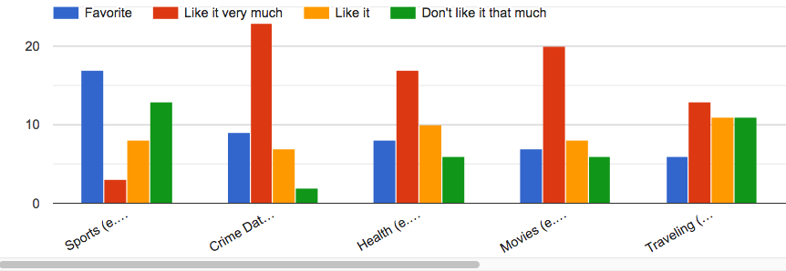
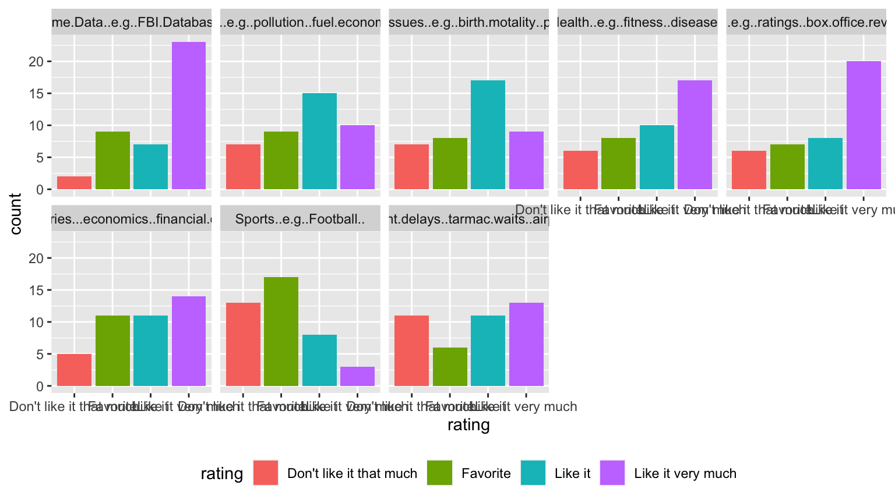

Your Turn (5 minutes)
 Jog down brief notes. We will then discuss with the class.
Jog down brief notes. We will then discuss with the class.
- What information is being shown by the previous figure?
- Is the figure easy to read? Why?
- What might be improved?
Xiongtao Dai

… there’s three more of these charts … which topic is the best?
This is what the raw data looks like
## Sports..e.g..Football.. Crime.Data..e.g..FBI.Database..
## 1 Favorite Like it
## 2 Don't like it that much Like it very much
## 3 Don't like it that much Like it very much
## 4 Like it Like it
## 5 Like it Favorite
## 6 Don't like it that much Like it very much
## Health..e.g..fitness..disease.. Movies..e.g..ratings..box.office.revenues..
## 1 Like it very much Like it very much
## 2 Like it very much Like it
## 3 Favorite Like it very much
## 4 Don't like it that much Like it
## 5 Like it very much Like it very much
## 6 Like it very much Favorite
## Traveling..e.g..flight.delays..tarmac.waits..airport.performance..
## 1 Like it
## 2 Like it
## 3 Like it very much
## 4 Like it very much
## 5 Like it very much
## 6 Like it
## Environmental.Data..e.g..pollution..fuel.economy..CO2.emissions..
## 1 Don't like it that much
## 2 Favorite
## 3 Like it very much
## 4 Like it
## 5 Favorite
## 6 Like it very much
## Salaries...economics..financial.data.
## 1 Like it
## 2 Don't like it that much
## 3 Favorite
## 4 Favorite
## 5 Like it
## 6 Like it very much
## Global.issues..e.g..birth.motality..poverty..
## 1 Like it
## 2 Like it
## 3 Favorite
## 4 Don't like it that much
## 5 Like it very much
## 6 Like it
Jog down brief notes. We will then discuss with the class.